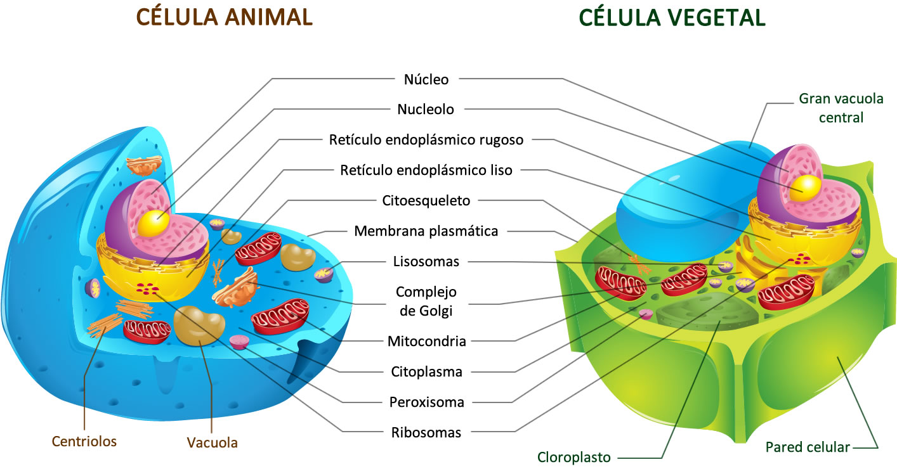

Estructura de la Célula Eucariota
Las células eucariotas contienen un núcleo definido y diversos orgánulos membranosos. Están presentes en animales, plantas, hongos y protistas.
- Núcleo: Contiene el ADN y regula la actividad celular.
- Membrana plasmática: Separadora entre el exterior y el interior.
- Citoplasma: Medio interno donde se ubican los orgánulos.
- Mitocondrias: Generan energía celular.
- Retículo endoplasmático: Transporte de sustancias.
- Aparato de Golgi: Empaqueta y distribuye sustancias.
- Ribosomas: Sintetizan proteínas.
- Lisosomas: Digestón celular (células animales).
- Cloroplastos y pared celular: En células vegetales.

Características de las Células Eucariotas
Comparación con Células Procariotas
Las células procariotas no tienen núcleo definido ni orgánulos membranosos. Son más simples y pequeñas. Ejemplo: bacterias.
Cuadro comparativo: Células animales vs vegetales
| Característica | Célula Animal | Célula Vegetal |
|---|---|---|
| Pared celular | No | Sí |
| Cloroplastos | No | Sí |
| Vacuolas grandes | No | Sí |
| Forma | Irregular | Regular (rectangular) |
Ejercicio tipo Quiz
1. ¿Cuál de las siguientes estructuras está presente solo en células vegetales?
- A. Lisosoma
- B. Cloroplasto
- C. Mitocondria
- D. Ribosoma
2. ¿Qué orgánulo genera energía en la célula?
- A. Aparato de Golgi
- B. Núcleo
- C. Mitocondria
- D. Ribosoma
3. ¿Cuál es la principal diferencia entre células eucariotas y procariotas?
- A. Las procariotas tienen mitocondrias
- B. Las eucariotas no tienen ADN
- C. Las eucariotas tienen núcleo definido
- D. No hay diferencias